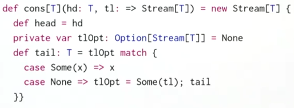
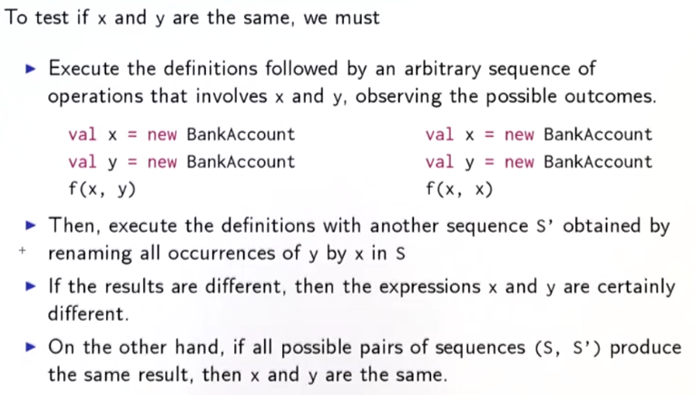
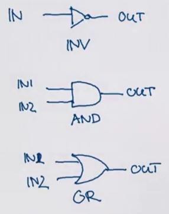
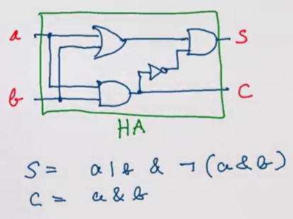
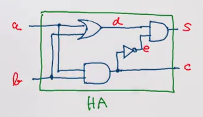
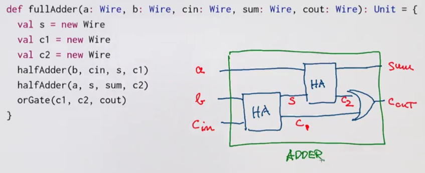
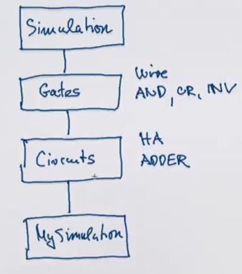
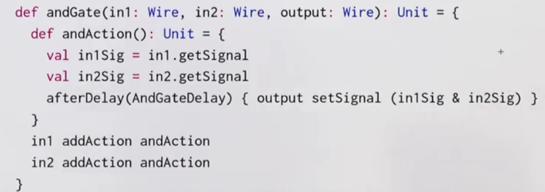

This week: scala for imperative programming.
Lecture 3.1 - Functions and State
So far: pure functional programming
→ side-effect free: therefore time doesn't matter.
Any rewriting that terminates lead to the same solution. (Churcher-Rosser Th)

Now: mutable states
Stateful objects: objects can have state that change over time. (state is influenced by its history). ⇒ variables var in scala, associates a value to a name, and can be changed by assignment.
ex. bank account — pretty much like java class
class BankAccount{
private var balance = 0
def deposit(amount:Int): Unit =
if (amount>0) balance = balance + amount
def withdraw(amount:Int): Unit =
if(0<amount && amount<=balance){
balance = balance - amount
balance
}else throw new Error("insufficient balance")
}
val acct = new BankAccount
acct deposit 50
acct withdraw 20
acct withdraw 10
ex2. streams impolemented using mutable variable

Lecture 3.2 - Identity and Change
when are 2 (mutable) objs equal ? → what is equal?
xandyare operationally equivalent if no possible test can distinguish between them.
to test if x and y are the same:

The substitution model is no longer valid:
-
x and y are
notthe same:val x = new BankAccount
val y = new BankAccount -
x and y are the same:
val x = new BankAccount
val y = x
Lecture 3.3 - Loops
prop: vars are already enough to model all imperative programs. Can model loops using functions.
ex. scala while loop
def power (x:Double, exp:Int): Double = {
var r = 1.0; var i = exp
while(i>0) {r = r*1; i = i-1}
r
}
This while loop can be implemented using a function WHILE:
def WHILE(cond: => Boolean)(cmd: =>Unit):Unit = {// cond and cmd must be passed by name
if(cond) {
comd
WHILE(cond)(cmd)
}
else () // or `()`=Unit (= void in java)
}
exercice: write a REPEAT function: REPEAT{cmd} (condition) , similar to do...while
def REPEAT(cmd: =>Unit)(cond: =>Boolean):Unit = {
cmd
if (cond) () // stop
else REPEAT(cmd)(cond)
}
do-while loop syntax in scala: do{cmd}while(cond)
the classical for loop in java can NOT be modeled by higher-order function, because the for loop arguments contains declaration of a variable i. However, in scala, use:
for(i <- 1 until 3) println(i)
This is similar to previously discussed for-expression, but using foreach instead of map/flatMap.
example:
for(i<-i until 3; j<- "abc") println(i+" "+j)
translates to:
(1 until 3) foreach (i => "abc" foreach (j => println(i+" "+j)))
Lecture 3.4 - Extended Example: Discrete Event Simulation
digital circuit simulator.
A digital circuit(DC) is composed of wires and functional components.
Basic components: Inverter, AND gate, OR gate
components have reaction time (delay)
diagrams:

example: half adder (input=a,b, output=sum and carry)

language to describe digital circuits: using classes and functions
val a,b,c = new Wire
def inverter(input: Wire, output:Wire): Unit
def andGate(a1: Wire, a2: Wire, output:Wire): Unit
def orGate(a1: Wire, a2: Wire, ouput:Wire): Unit
a half adder can be defined as:
def halfAdder(a: Wire, b: Wire, s: Wire, c:Wire): Unit = {
val d,e = new Wire
orGate(a,b,d)
andGate(a,b,c)
inverter(c,e)
andGate(d,e,s)
}

And this half adder can be used as another component, for example, for full adder:

Lecture 3.5 - Discrete Event Simulation: API and Usage
give implementations of the digital circuits, based on an API for discrete event simulation.
discrete evenet simulator
performs actions, specified by user at a given moment.
An Action: a function that takes 0 parameters and returns Unit.
type Action = () => Unit
class hierachy:

trait Simulation {
def currentTime: Int = ???
def afterDelay(dalay: Int)(block: =>Unit): Unit = ???
def run(): Unit = ???
}
abstract class Gates extends Simulation{
class Wire{...}
...}
abstract class Circuits extends Gates{...}
object sim extends Circuits
...
Wire class:
state of a wire is modeled by 2 private vars
getSignal: Boolean: current value of signal in wiresetSignal(sig:Boolean):Unit: modifies value of signaladdAction(a: Action): Unit: attach actions to be executed at each change of signal
class Wire{
private var sigVal = false
private var actions: List[Action] = List()
def getSignal = sigVal
def setSignal(sig:Boolean):Unit =
if(getSignal!=sig){
sigVal = sig
actions foreach (_()) // for(a<-actions) a()
}
def addAction(a: Action):Unit = {
actions = a::actions
a() // have to perform it when added
}
}
Inverter:install an action on its input wire, the change is effective after a delay.
def inverter(input:Wire, output:Wire):Unit = {
def invertAction():Unit = {
val inputSig = input.getSignal
afterDelay(InverterDelay) {output setSignal !inputSig}
}
input addAction invertAction
}
andGate/orGateis similar:

Lecture 3.6 - Discrete Event Simulation: Implementation and Test
implement the simulation trait: keep each instance of Simulation in agenda of actions to perform.
Agenda is a list of Events, each event consists of an action and the time, sorted by actions' time.
To run the simulation, use a loop to handle events in agenda.
To examine the changes of the signals in wires, use funciton probe.
trait Simulation {
type Action = ()=>Unit
case class Event(time:Int, action:Action)
private type Agenda = List[Event]
private var agenda: Agenda = List()
private var curtime = 0
def currentTime: Int = curtime
def afterDelay(delay: Int)(block: =>Unit): Unit = {
val item = Event(currentTime+delay, ()=>block)
agenda = insert(agenda, item) //insert to the write time
}
private def insert(ag:List[Event], item:Event): List[Event] = ag.match{
case first::rest if first.time<=item.time
=> first::insert(rest, item)
case _
=> item::ag
}
private def loop():Unit = // event handling loop
agenda match{
case first::rest =>
agenda = rest
curtime = first.time
first.action()
loop()
case Nil =>
}
def run(): Unit = {
afterDelay(0){println(s"*** simulation started, time = $currentTime ***")}
loop()
}
def probe(name:String, wire:Wire):Unit = {
def probeAction(): Unit =
println(s"$name time = $currentTime, value = ${wire.getSignal}") // string formatting in scala
wire addAction probeAction
}
}
to pack delay constrains into their own trait, use extend..with.. syntax:
trait Parameters{
def InverterDelay = 2
def AndGateDelay = 3
def OrGateDelay = 5
}
object sim extends Circuits with Paramters
summary
state and assignments make model more complicates, lose referential transparency
on the other hand, assignments allow formulate certain programs in an elegant way.
Programming Assignment: Quickcheck
This assignment has nothing to do with the mutable data... but rather to use scalacheck for testing.
Write properties that a heap should have to test heap implementations.
about Generator
https://github.com/rickynils/scalacheck/blob/master/doc/UserGuide.md#generators
my code:
https://github.com/X-Wei/Coursera-progfun2/tree/master/hw3-quickcheck/quickcheck
Disqus 留言